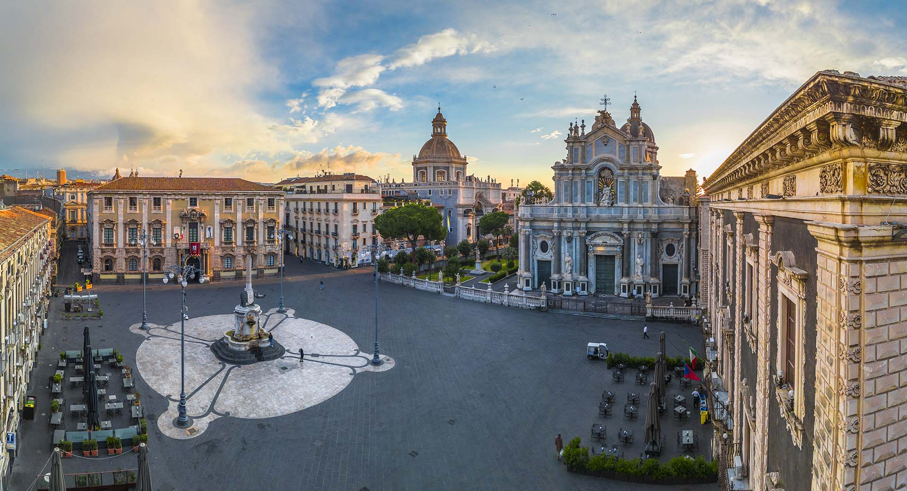
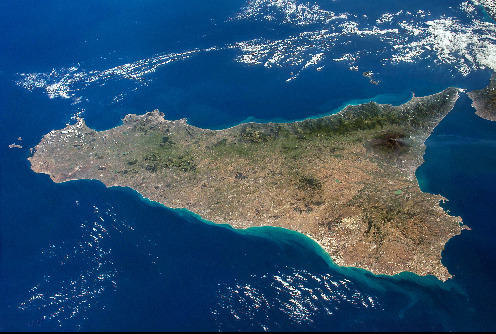
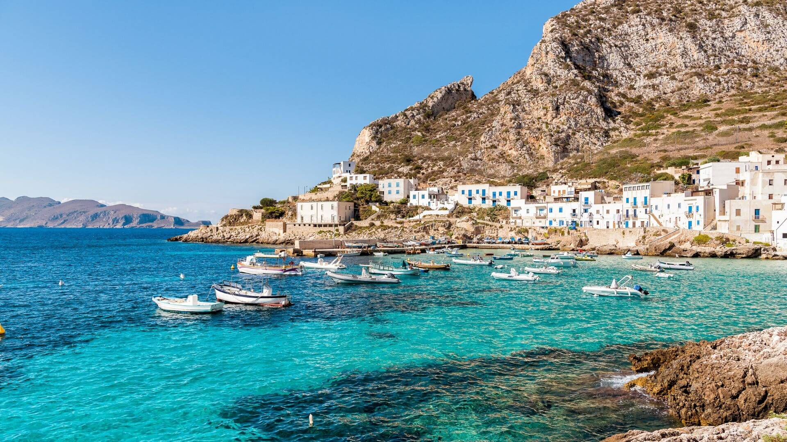

Catania


Posta al centro del mar Mediterraneo, anticamente era detta Trinacria, poi Sicania e, infine, Sikelìa. È detta anche isola del Sole per la sua identificazione con l'isola descritta da Omero nell'XI libro dell'Odissea, nonché isola-continente per la notevole varietà dei suoi aspetti naturalistici, storici e culturali. Con una superficie di 25 426 km², pari - grosso modo - all'intera superficie di tutte le isole della Grecia, è la più grande isola italiana; è, inoltre, la più estesa isola del mar Mediterraneo, la settima d'Europa (ma seconda dell'Unione europea), la quarantacinquesima del mondo. È l'isola più densamente popolata del Mediterraneo dopo Malta, e la più popolata in assoluto nel Mediterraneo.
In Sicilia, la piazza non è mai un semplice spazio vuoto tra gli edifici. È il 'salotto buono', l'agorà dove si intrecciano politica, religione e mercato. È un teatro barocco progettato per stupire, dove ogni scalinata, chiesa o fontana funge da scenografia per lo spettacolo quotidiano della vita pubblica.
